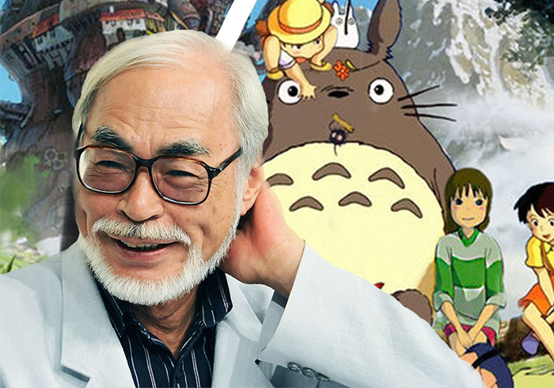

Hayao Miyasaki
Ilustrador, animador, director, guionista y productor cinematográfico japonés, el cuál es considerado por muchos como uno de los principales referentes del anime
Por Vedia Jesica
Hayao Miyasaki es un director de cine de aventura, pionero en la industria de la animación en Japón, que también se dedica a producir, a ilustrar y a dibujar mangas. Fue el pimer cineasta que rompio con la vieja concepción de que el cine de animación es exclusivo para el público infantil y cuyos argumentos deben ser forzosamente musicales.
SUS
PRIMEROS
PASOS
Nació el 15 de enero de 1941 en Tokio, estudió Ciencias Políticas y Económicas, donde los autores que leyó influyeron en su forma de narrar historias. Como tenia dotes artísticos, cuando terminó la universidad empezó a trabajar en Toei Doga como intercalador. En 1965 se casó con Akeni Ota, una dibujante, con quien tuvo 2 hijos, Goro y Keisuke. Durante el transcurso del tiempo fue adquiriendo cargos con mayores responsabilidades y se hizo amigo de Isao Takahata, quien luego seria uno de sus colaboradores. Al convertirce en un animador experimentado formo parte de Nippon Animation, donde dirigió: “Conan, el chico del futuro”. Después de varios años inmerso en un proceso de árduas ideas y proyectos, la revista Animage le encarga realizar un manga con total libertad, que tiempo después sera adaptada a película por el mismo. En 1985 Miyasaki y Takahata fundan el "Studio Ghibli", donde se embarca en la dirección y guion de sus propias películas.
Acabaré esta película aunque lleve al estudio a la ruina
HAYAO MIYASAKI
Acabaré esta película aunque lleve al estudio a la ruina
HAYAO MIYASAKI
SU ESTILO DE
TRABAJO
Los trabajos que realizó Hayao Miyasaki se caracterizaban por tocar temas variados, siempre dejando una enseñanza o una reflexión,usando principalmente el drama para empujar y profundizar la historia, a travez de emociones que van mas allá de lo clásico, dando además la visión de una mujer fuerte, capaz de defenderse sola. Tambien en sus peliculas le da un papel importante a la naturaleza, dejando en claro que hay que cuidar y vivir en paz con la ella. Por otra parte en cuanto al dibujo y el trazo, denota una delicadeza y una perfeción, en la calidad de dibujo, mezclando diferentes estilos, dandoles a sus personajes un toque de realismo. Otro dato importante es que al momento de realizar una pelicula, él no se utiliza guiones si no un story board , que se va haciendo junto con la película.
SU RETIRO
Y EL REGRESO
A LOS CINES
Aun que ya desde hace unos años el director del Studio Ghibli Miyasaki a estado anunciando su retiro, y presentado oficialmente en 2013 su última pelicula "El viento se levanta", hoy en día esto ha cambiado, aunque todavía no hay un anuncio oficial, están circulando rumores de que Miyasaki esta trabanjando en un nuevo proyecto. El Studio Ghibli publicó un anuncio de contratacion buscando animadores para un contrato de 3 a 4 años que comenzará el 1 de octubre, siendo este el primer reconocimiento oficial de Studio Ghibli de la nueva película. Tambien según los medios nipones se ha revelado el título de este nuevo filme "Kimitachi wa Do Ikuru ka" (¿Donde vivis?, que estará inspirada en una novela homónima publicada en 1937. Esperemos que esta nueva pelicula, no quede solo en rumores y pueda llegar a los cines, mostrandonos solo lo que las peliculas de un estudio como este nos puede transmitir.